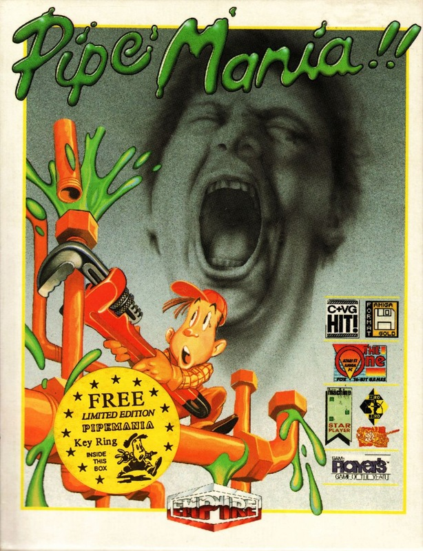
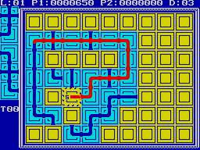

Pipe Mania


{kind=link}

| Publisher: | Empire |
| Price: | £9.99 / £14.99 |
| Year: | 1990 |
| Source: | CRASH, Issue 77 |

A plumber’s lot — in this game — is not a happy one. Pipe Mania sees you in the guise of an unfortunate plumber who must construct a continuous pipeline on the playing grid through which the ever-flowing green Flooz is channelled. To the side of the grid you’re provided with a starting point and a dispenser loaded with differing pieces of pipe. The idea is to set down a preset number of piping before the Flooz reaches you. You only have a head start of a few gaconds, so building is a matter of some urgency!

Pipe Mania has three different playing modes: basic one piayer, expert one player and if a friend is to hand, competitive two player. The training mode for all three options is the best to start with as the Flooz fiows much slower. If you set a piece of pipe down that won’t fit you can always ‘bomb’ it, though it takes time to replace and you lose 50 points: if you find the next piece in the dispenser doesn’t fit, the best thing to do it set it in a different place and try to head the Flooz flow towards it. Forward thinking counts for a lot in this game.
To end the level fit the set amount of piping together and watch the Flooz go, simple as that — but on later levels things become more hectic. One way sections pop up (the Flooz can only head in the direction of the arrows), end sections appear into which you must guide the finished pipeline. Indestructible obstacles force you to go round them. If you get a long way and die, a helpful password system shows you to get back into the action.
And Pipe Mania is certainly action all the way: amazing how a simple idea can create a mega-playable game (as in Klax too). The graphics are very simple, but as there aren’t any beefy character sprites charging round the screen this doesn’t really matter. The sound livens up the game no end with a great tune and stacks of sound effects. Whether plumbing strategy is your scene or not, Pipe Mania will get your adrenalin Flooz flowing!
MARK — 91%
Pipe Mania is wickedly addictive. Once you start playing you just won’t be able to put it down. It’s one of those games that is really simple, but still catches you out. Just make a pipeline as long as you can, using the pieces of pipe given to you in random order. The trick is to plan ahead, knowing exactly where you want to stick a four way mega pipe with triple bend. The graphics are very simple, nothing to shout about at all, but the sound is more exciting with a groovy tune and plenty of spot effects. Sheer playability will keep you busy for a long long time.
NICK — 90%
RATING
A manic puzzle game — it’s the fun way to drive yourself round the bend!
| Presentation: | 82% |
| Graphics: | 70% |
| Sound: | 82% |
| Playability: | 90% |
| Addictivity: | 92% |
| Overall: | 90% |